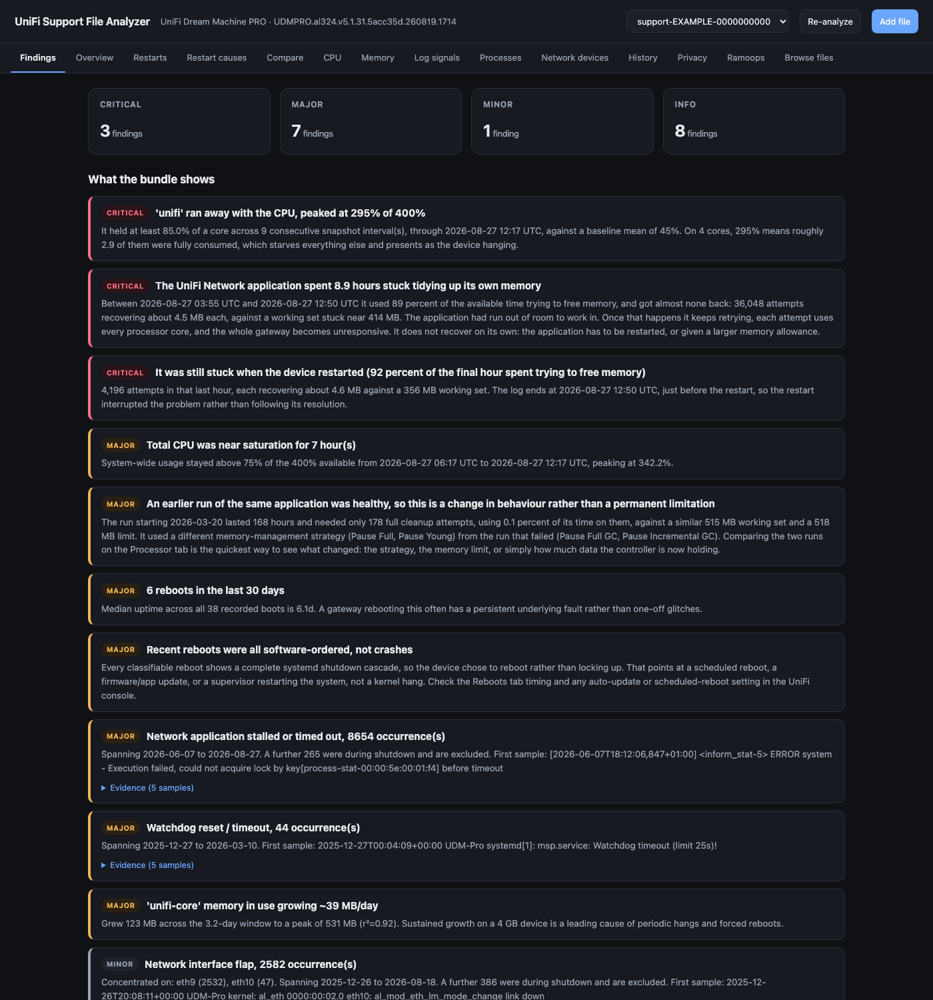
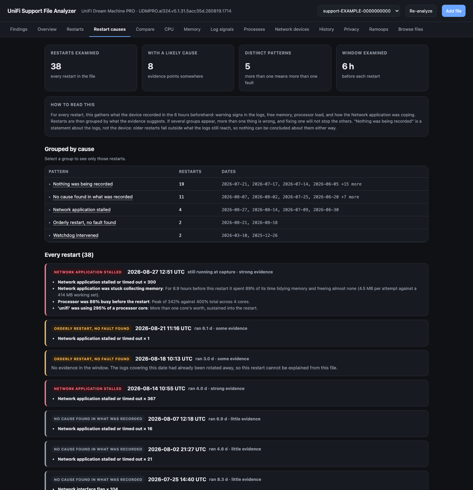
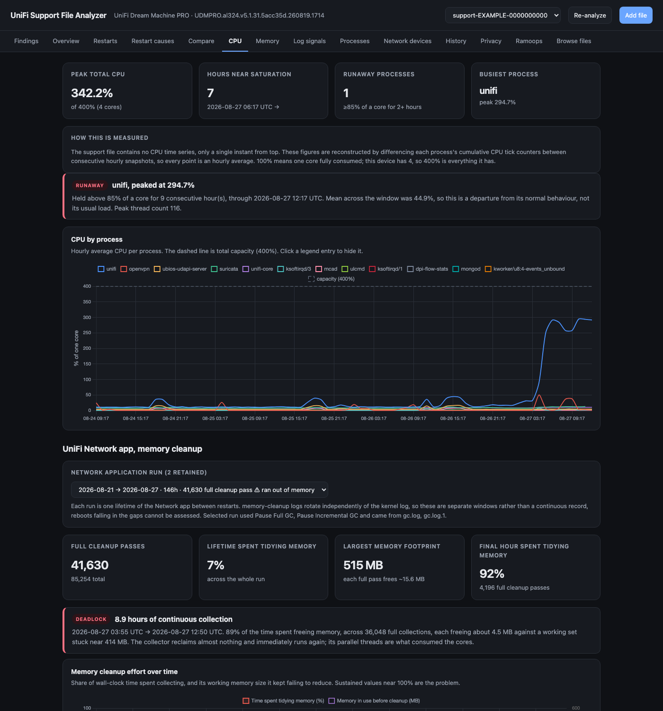
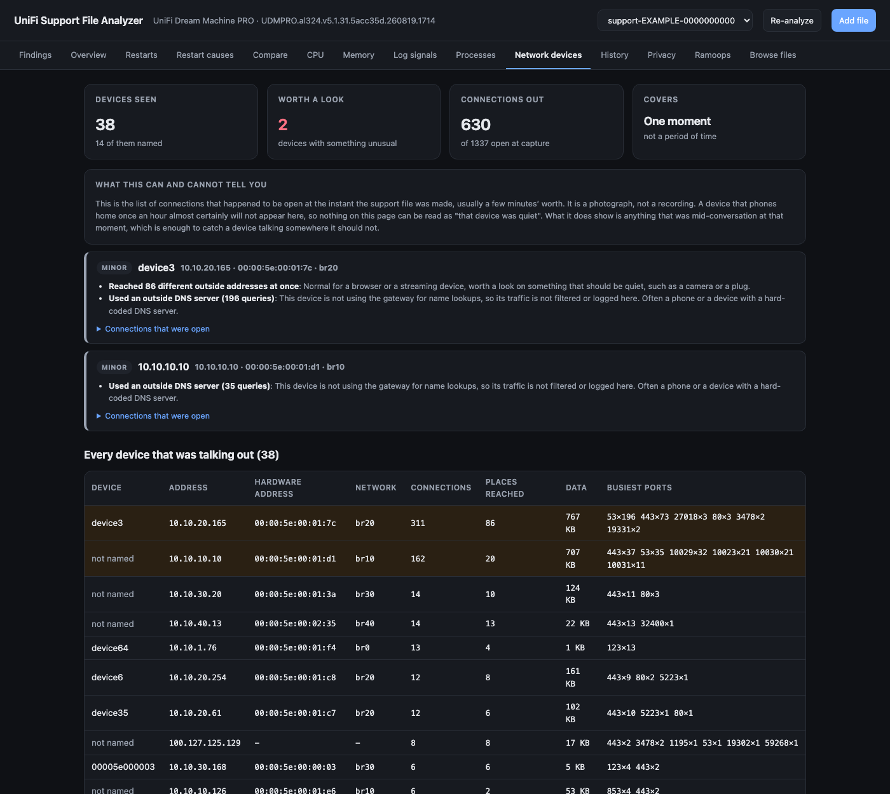
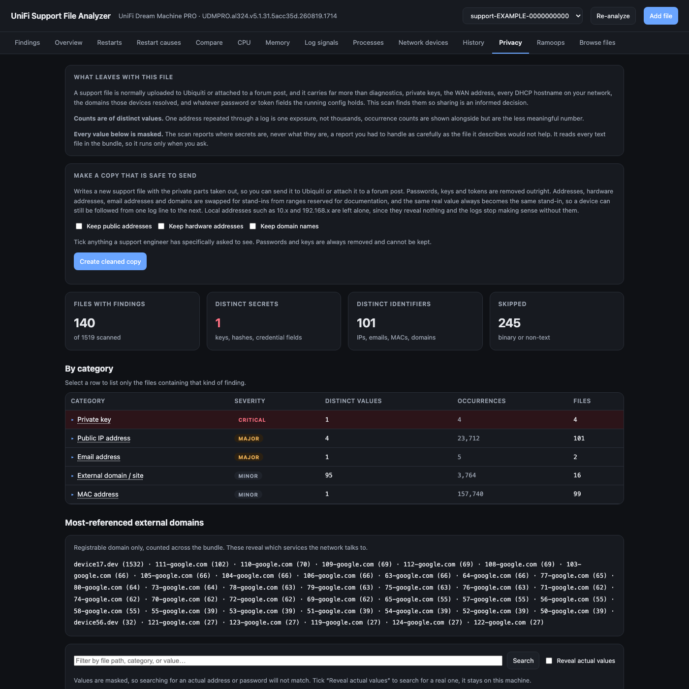
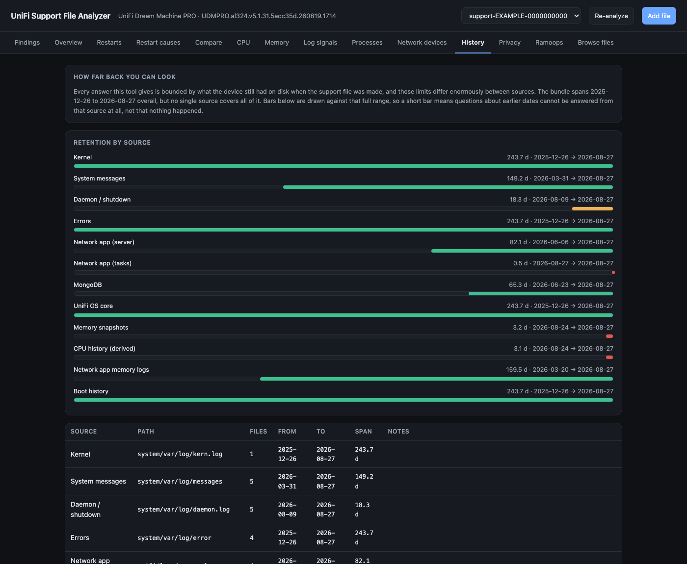

About how this was built
This tool was written by prompting an AI, in conversation, rather than typed line by line. That is worth saying plainly, for two reasons.
The first is transparency. You should know what you are running and judge it accordingly. Every analysis states the evidence it rests on and the limits of that evidence, and the code carries comments explaining why each rule is written the way it is, including the false alarms that shaped it. Where the support file cannot answer something, the tool says so instead of guessing. Read it, and check anything that matters before acting on it.
The second is the point of the thing. A UniFi console tells you that something went wrong, rarely why. This exists to make the underlying evidence legible, so that you understand your own network better and so that a conversation with UniFi support can start from specifics such as "the Network application ran out of working memory for 8.9 hours before this restart, here is the log" rather than "it keeps rebooting". That tends to get to an answer faster.
It is not an official Ubiquiti tool and has no connection to Ubiquiti. It reads files. It never changes your device.
What it shows
Why it restarted
Every restart, with what the device recorded in the hours before it, grouped by cause. Several groups means several faults.
Processor and memory
Per-process history reconstructed from the hourly snapshots, so a runaway process is visible even after the fact.
What is running
Every process seen, with anything outside the normal UniFi software flagged: unexpected locations, deleted files, odd listening ports.
Your network
The devices behind the gateway and what they were connecting to, named from your DHCP leases.
What the file reveals
Private keys, passwords, addresses, device names. Everything shown masked, so the report itself is safe.
A copy safe to send
Writes a cleaned support file with the private parts replaced, keeping it useful for diagnosis.
Screenshots
All taken from a real support file that was first run through the tool's own cleaning step, so every address, device name and identifier below is a stand-in.






Installing and running it
You need Python 3.9 or newer. Nothing else. The first run creates its own isolated environment and installs what it needs.
Install Python from python.org and tick "Add python.exe to PATH" during setup. Then, in PowerShell:
git clone https://github.com/Inch-high/unifi-support-file-analyzer.git cd unifi-support-file-analyzer python run.py
Or download the project as a ZIP, unzip it, and double-click
run.bat.
If Windows says python is not recognised, try py run.py.
macOS includes Python 3. In Terminal:
git clone https://github.com/Inch-high/unifi-support-file-analyzer.git cd unifi-support-file-analyzer python3 run.py
If macOS asks you to install developer tools the first time you run
git, accept, then run the commands again. You can also
download the ZIP instead of using git.
Most distributions ship Python 3. On Debian or Ubuntu you may need the virtual-environment package first:
sudo apt install python3 python3-venv git git clone https://github.com/Inch-high/unifi-support-file-analyzer.git cd unifi-support-file-analyzer python3 run.py
On Fedora: sudo dnf install python3 git. On Arch:
sudo pacman -S python git.
Your browser opens at http://127.0.0.1:8077. Drag a support
file onto the page, or put it in the project folder before starting and it
will be picked up. You can also pass one directly:
python run.py ~/Downloads/support-XXXX-1234567890.tgz
Getting a support file from your console
In the UniFi console: Settings then Control
Plane then Console, and choose to download the
support file. It arrives as support-XXXX-NNNNNNNNNN.tgz.
Exact wording varies between UniFi OS versions.
How long it takes
| Step | Modern desktop, SSD | Older laptop, hard disk |
|---|---|---|
| Full analysis | about 13 seconds | a minute or two |
| Privacy scan | about 13 seconds | a few minutes |
| Writing a cleaned copy | about 60 seconds | several minutes |
Files are processed across processor cores, so core count sets the pace,
and disk speed matters because the work is thousands of small reads rather
than one long one. Results are cached, so the cost is paid once per file.
Set ANALYZER_WORKERS to control how many cores it uses.
Your data stays with you
There is no cloud service and no telemetry. The tool runs a small web server bound to your own machine, reads the file you give it, and writes its results next to it. The privacy scan masks every value it reports, so the report is safe even when the file it describes is not. If you want to see a real value, there is a switch for that, and it is deliberately a switch rather than the default.
What it is not
- Not official, and not affiliated with Ubiquiti.
- Not a monitor. It reads a file after the fact; it does not watch your network.
- Not a security scanner. It points out things worth a look and explains why, and an unfamiliar process is far more often a firmware change than an intrusion.
- Not a substitute for your own judgement. Findings are evidence and reasoning, meant to be checked.